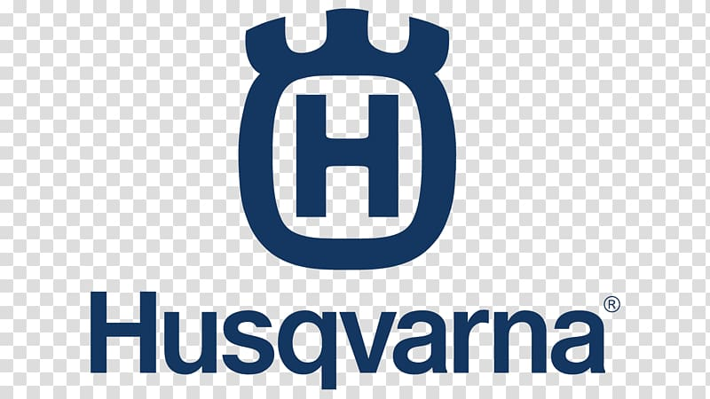
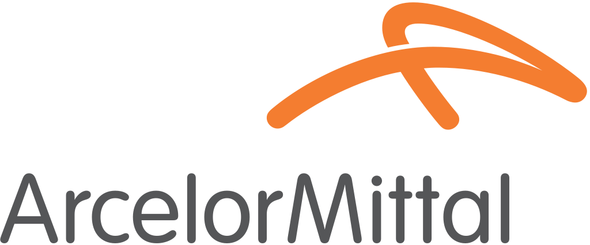
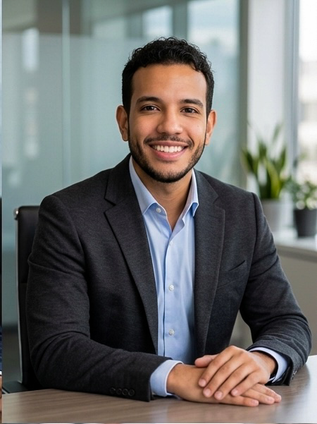
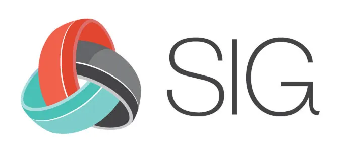
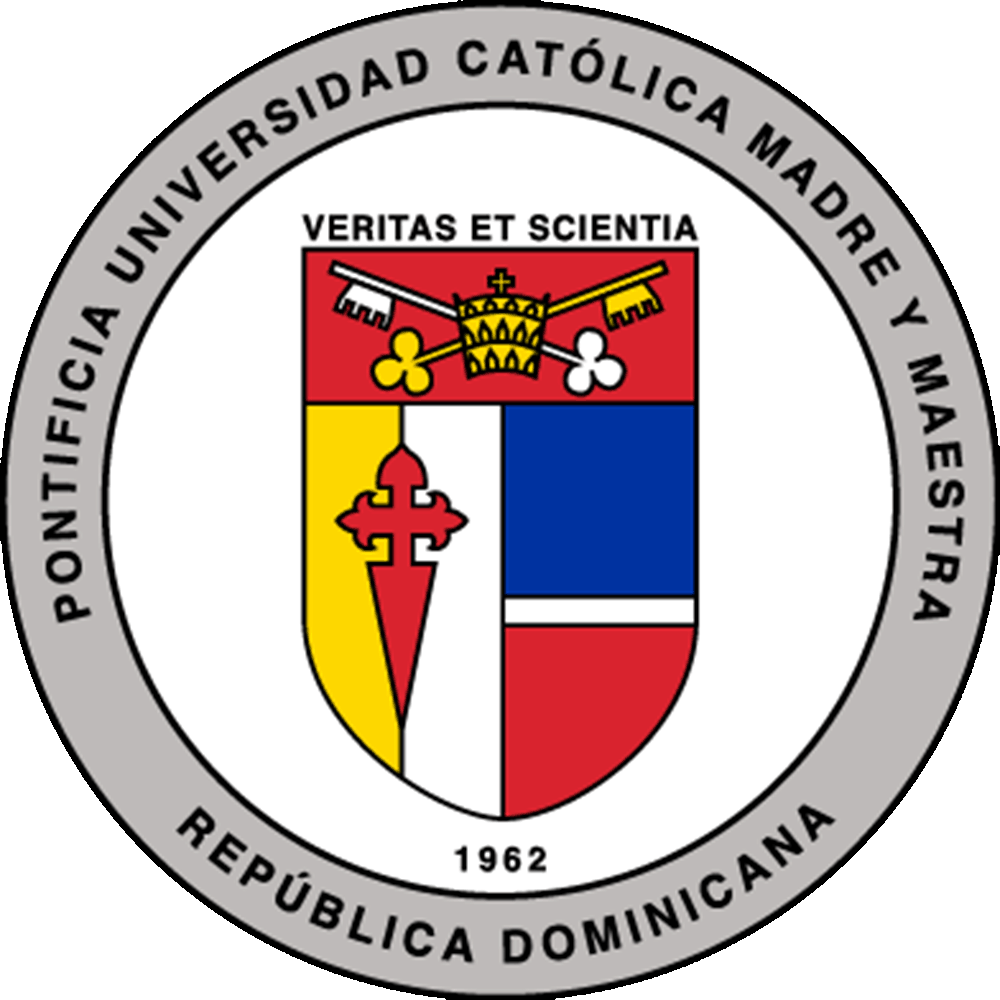
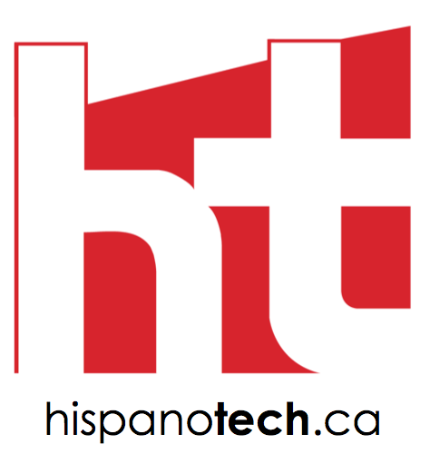
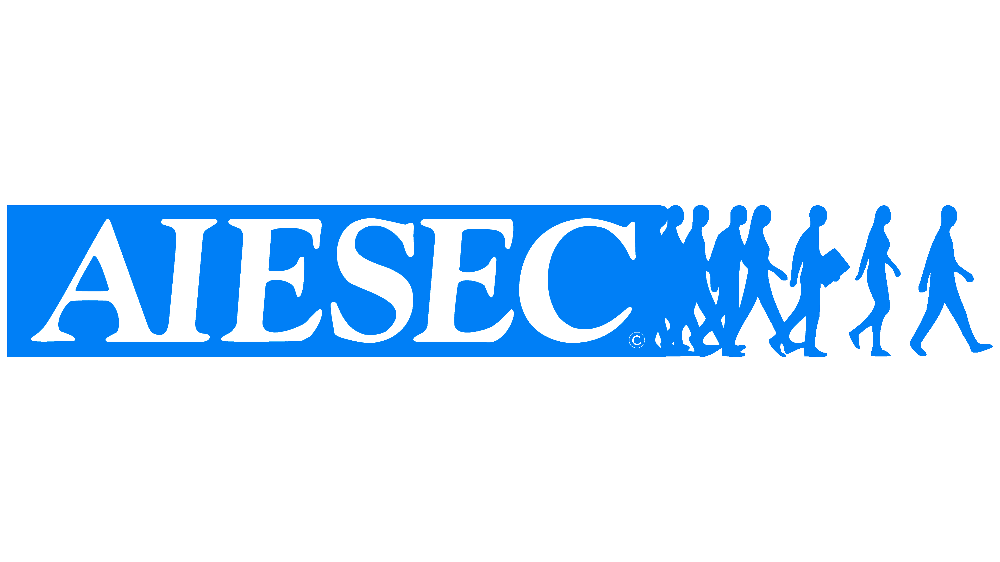

15 years. 8 countries. $100M+ portfolios. Building procurement excellence for the world's most regulated organizations.
Over 15 years, I've worked at the intersection of commercial discipline and human relationships — from manufacturing floors in Belgium and Sweden to the boardrooms of Canada's largest financial institutions.
I currently lead strategic sourcing at TD Bank, overseeing a $100M+ CAD spend portfolio in one of Canada's most regulated environments. Previously at Indigo, I built a vendor platform for 3,000+ suppliers and delivered $2.6M in savings within eight months.
I speak at global procurement summits, mentor professionals through Hispanotech Canada and the TD Capabilities Mentorship Program, and believe that lasting commercial outcomes are built on trust as much as terms.



I grew up in the Dominican Republic, studied across Europe on an Erasmus scholarship, and have lived and worked across 8 countries. That global perspective shapes how I approach every negotiation and relationship.
I mentor Latin professionals through Hispanotech Canada and the TD Capabilities Mentorship Program, and speak at procurement events because strategic sourcing — done well — deserves a bigger stage.




Looking to hire a sourcing leader, book a speaker, or simply connect? I'd love to hear from you.